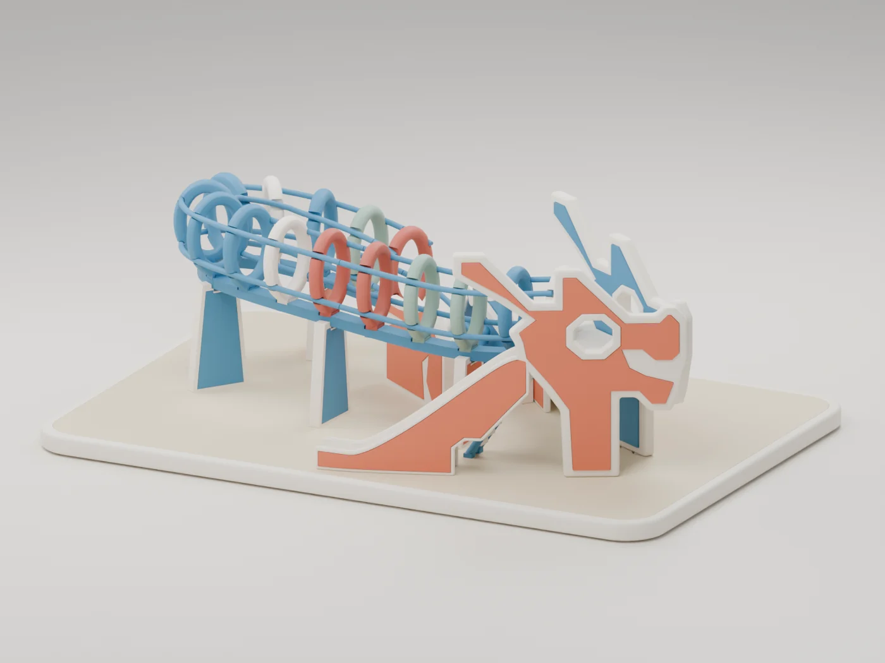

01 / Workout telemetry
Pitwall
Garmin workouts and races, streamed through a paired phone to your own server and terminal.
Simulator verified. Physical phone delivery remains unverified.
Explore PitwallIndependent projects
Personal projects, mostly built to scratch an itch. AI-assisted and deliberately curated, with care put into design, implementation, and verification.
Chio is open source. Perch and Toa Payoh Dragon share print candidates and editable CAD. Pitwall, Marquee and Blackbox have private source code and public overviews.
Demonstrations use synthetic data.
Metaphysical
01 / Workout telemetry
Garmin workouts and races, streamed through a paired phone to your own server and terminal.
Simulator verified. Physical phone delivery remains unverified.
Explore Pitwall02 / Personal pixel displays
A small display for what matters now. Personal facts become short, playful billboards with live progress.
TC001 output exercised. Automatic examples use synthetic sources.
Explore Marquee03 / Locally owned health data
Preserve Garmin Connect source data on your own storage, then query and rebuild local views from the archive.
Pre-release recent daily synchronization and local retrieval. Full-history traversal remains pending.
Explore Blackbox04 / Swift terminal interfaces
A Swift toolkit for expressive terminal interfaces, with themes and reusable controls built on SwiftTUI.
Open source. Experimental Swift toolkit.
Explore ChioPhysical things
05 / A home for story time

A soft, sculpted home for a Yoto Mini, its cards and kids’ headphones. Compact, 3D printable, and ready to make your own.
Print candidate. Card fit accepted; revised player and headphone fit still need physical checks.
Explore Perch06 / A little Singapore landmark

A playful, six-colour PLA model of Singapore’s iconic dragon playground. Made for a Bambu Lab X1 Carbon, 0.4 mm nozzle, without AMS.
v03 fit-test candidate: 94 parts and 29 fit samples. Physical fit and print success have not yet been tested.
Explore Toa Payoh Dragon